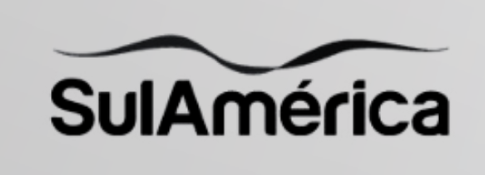
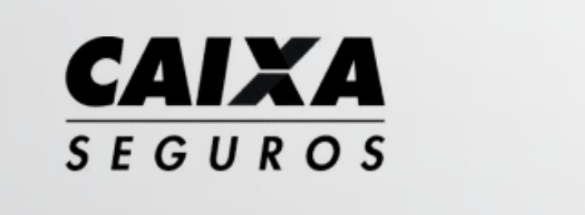

Mentoplastia com prótese
Avaliação da projeção e da simetria do queixo, considerando o equilíbrio com as demais estruturas faciais.
Próteses personalizadas podem integrar o planejamento de alterações de projeção, proporção e simetria facial.
Agendar consultaAvaliação da projeção e da simetria do queixo, considerando o equilíbrio com as demais estruturas faciais.
Próteses de mandíbula podem ser avaliadas para definição do contorno inferior do rosto.
A projeção da região média da face pode ser abordada por meio de implantes planejados conforme a anatomia.
Exames tridimensionais ajudam na definição das próteses e da estratégia cirúrgica. Riscos, limitações e alternativas devem ser discutidos em consulta.
Os convênios abaixo aparecem separados em uma linha animada. Consulte a equipe para confirmar cobertura, autorização e disponibilidade do procedimento.





Agende uma avaliação individualizada para esclarecer suas dúvidas e conhecer as possibilidades de tratamento.
Agendar consultaOdontologia Especializada
Cidadela Center III · Sala 406